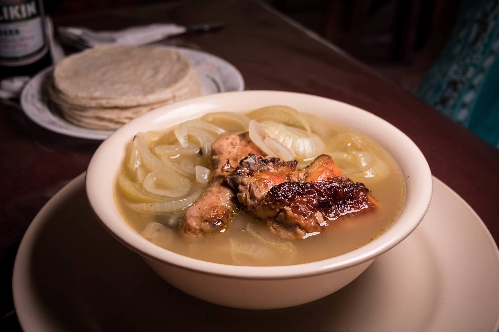

Belizean Escabeche

Description
DESCRIPTION GOES HERE
Ingredients
- 1 whole chicken (3-4 lbs.)
- 2-3 tsp. Grace white vinegar
- Salt to taste
- Black pepper to taste
- 10 spice seeds
- 2 jalapeño peppers or banana peppers
- 3 lbs. sliced white onions
- 10 oregano leaves
- 1 head garlic
Method:
- Boil spices in water, add chicken and cool until tender.
- Remove chicken from broth and put the broth aside for later.
- Cut chicken into parts and season thoroughly.
- PLace chicken parts on a baking pan and bake at 400 degrees until golden brown.
- Add vinegar to the broth (to taste) along with boiled garlic and peppers.
- Pour boiling water over onions to remove rinds.
- Add sliced onions to broth and cook for another 5 minutes.
- Remove soup from heat.
- Serve hot with fresh corn tortillas.
Back To Recipes